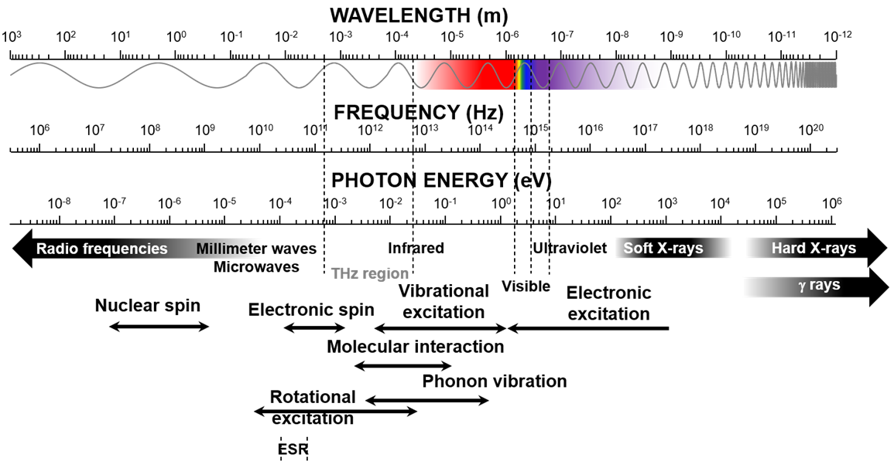

Overview
光の研究は古代の自然観察から始まり、 波動説・粒子説の論争を経て、 現在の量子光学へと発展してきた。 本ページでは光学の発展を概観し、 光の波動性と粒子性について整理する。
Electromagnetic Spectrum
電磁波の周波数と物理現象との関係。

Historical Timeline
| 時代 | 主な出来事 |
|---|---|
| 紀元前 |
日常現象の観察 ・光の直進 ・反射 ・屈折 |
| 17世紀 |
実験科学の発展 ・ニュートン力学 ・フェルマーの原理 ・ホイヘンスの原理 ・波動説と粒子説の論争 |
| 19世紀 |
波動光学の確立 ・フレネル ・キルヒホッフ ・マックスウェル電磁理論 ・光速測定 |
| 20世紀 |
量子論の発展 1905年 アインシュタイン（光電効果） 1923年 コンプトン散乱 1924年 ド・ブロイ仮説 → 光の二重性の確立 |
| 21世紀 | 量子光学・ナノフォトニクス・超高速分光 |
Wave–Particle Duality
| 現象 | 波動性 | 粒子性 |
|---|---|---|
| 反射 | ○ | △ |
| 屈折 | ○ | △ |
| 干渉 | ◎ | × |
| 回折 | ◎ | × |
| 偏光 | ◎ | × |
| 光電効果 | × | ◎ |
| コンプトン散乱 | × | ◎ |
| 単一光子干渉 | ◎ | ◎ |
From Classical Optics to Quantum Optics
17〜19世紀に確立された古典光学は、 レンズ設計や分光学の基盤となった。 20世紀には量子論によって 光の粒子性が明らかとなり、 現在では波動性と粒子性を統一的に扱う 量子光学へ発展している。 本チームで扱う赤外発光分光や 非平衡ダイナミクス研究も、 この流れの上に位置付けられる。